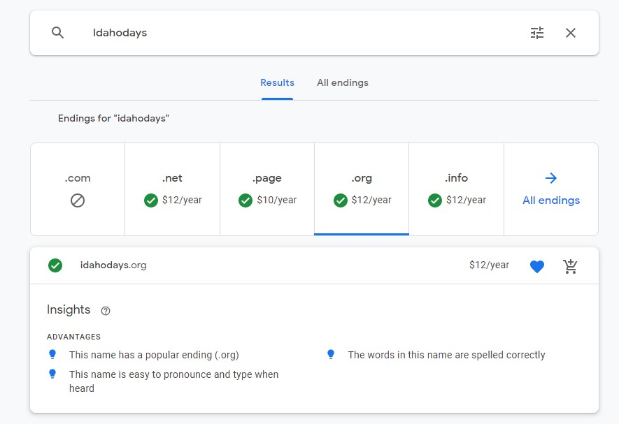

The site name is Idaho Days - www.Idahodays.org
This site name is available per google

Site Purpose
The site purpose is to help people know important information about this area. Some of the things that they might want to know about could include the upcoming and past weather, news in the area, the education opportunities and possibilities in the area.
Target Audience and Scenarios
Audience
The audience expected for this site are residents that are busy and would like to find much of the information about what is happening around them in one place. Another audience group that is expected to view this site are people that are looking at the area as a possible place to move to.
Scenario 1
- This user is a 35 year old person who lives in the area, has children and family they support, as well as working full-time.
- Being busy they want to use their time wisely
- The specific tasks or goals the user need is to learn about the weather and important aspects of daily life without having to search through many sources of information.
- The user crosses many different boundaries that society places in our lives, because the information given shares information in an unbiased way.
- The user will be able to save news bits for access later.
- Points of friction for this user could is that they would like to organize the way they receive the options available on the site.
Scenario 2
- This user is a 45 year old person with 5 children and is trying to find the right area to move to in this area as they have just accepted a job in the area.
- This user is trying to match many different pieces of the life of their family so that all family members are in the best place for their growth and learning.
- This user wants to find the best schools for each of their children. Their children are spread across elementary, middle, and high school.
- This user is on the higher end of the income that is in the area.
- The user will be able to share important information about the schools and extra-curicular activities available to the family.
- The points that could cause this user problems is if unclear or incomplete information is available.